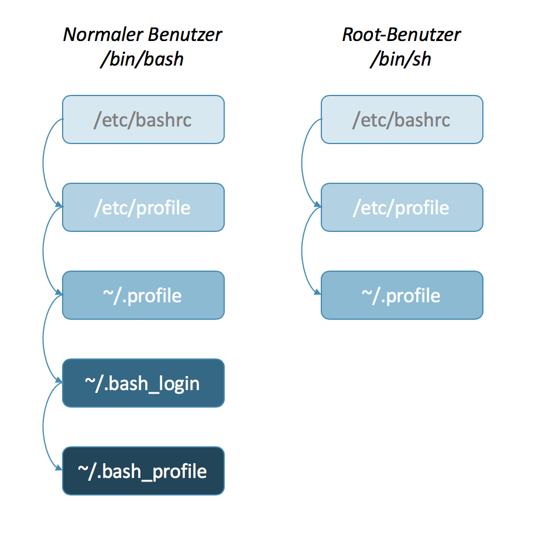
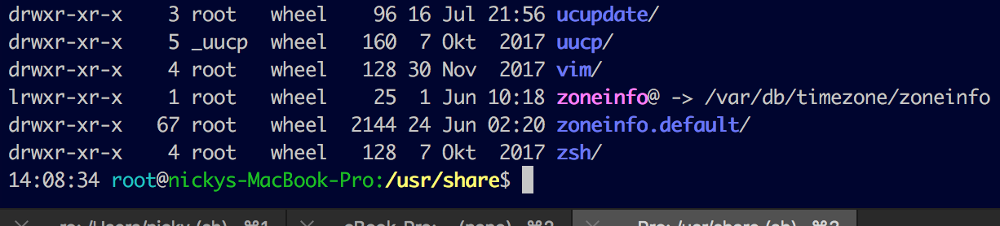

Die OS X - Bash
Da ich mit meinem Mac sehr oft auf der Kommandozeile unterwegs bin (dazu empfehle ich übrigens iTerm2 - ein Terminal-Ersatz der alle anderen Anwendungen dieser Art auch auf Linux und Windows aussticht) habe ich mir dafür ein paar kleine Einstellungen zusammengesammelt, die das Leben und Arbeiten auf der Kommandozeile etwas erleichtern.
Was ist Bash?
Bash steht für “Bourn again shell” und ist eine Erweiterung der älteren Bourne-Shell, eine Shell die auf Unix-(ähnlichen) Systemen als Benutzerschnittstelle dient. Und diese ist vor allem daran erkennbar, dass die Steuerung des Systems nur über die Tastatur, ohne Maus und Fenster funktioniert.
Seit der Version 10.3 ist Bash auch Bestandteil von Mac OS X und bringt damit eine Menge Vorteile für die Arbeit auf der Kommandozeile mit sich.
Die Bash Konfigurationsdateien
Die globalen Einstellungen für die Bash befinden sich in der Datei /etc/bashrc und der /etc/profile. Wer Einstellungen auf bestimmte Benutzer beschränken will, kann im Benutzerverzeichnis (du gelangst mit cd ~ dorthin) eine Datei mit dem Name .profile, .bash_login oder .bash_profile anlegen. Beachte, dass .profile nur geladen wird, wenn .bash_login nicht existiert, welche wiederum durch .bash_profile überschrieben wird. Das gilt allerdings nicht, wenn du dich als root-Benutzer anmeldest - dann wird nur die Datei .profile gelesen. Der Grund ist, dass der Root-Benutzer nicht bash sondern sh ausführt, wodurch nur die ~/.profile-Datei berücksichtigt wird.

Hierarchie der Bash-Konfigurations-Dateien
Daneben gibt es theoretisch auch die Möglichkeit, im Benutzerverzeichnis eine Datei mit dem Namen .bashrc anzulegen. Diese wird jedoch nur dann geladen, wenn Bash ausgeführt wird, ohne dass sich ein Benutzer dazu anmeldet (die sogenannte non-login-shell). Im OS X-Umfeld wird das aber nicht benötigt. Du kannst das erzwingen, indem du auf der Kommandozeile /bin/bash ausführst - wir wollen die jetzt schon komplizierte Geschichte aber nicht unnötigen verkomplizieren. ;)
Die Bash aufhübschen
Nach der langweiligen aber notwendige Theorie, gibts jetzt ein paar Zeilen Code, mit denen die Kommandozeile gleich viel besser aussieht. Ich hab aus oben genannten Gründen das Ganze in die Datei ~/.profile gepackt. Zunächst einmal ein paar Aliase um die Verzeichnislisten etwas übersichtlicher zu gestalten oder auch das oft benutzte cd (change dir) zu vereinfachen.
alias l='ls -alCFGA'
alias ll="ls -CFGla"
alias h="history"
alias .="cd ~"
alias ..="cd .."
alias ...="cd ../.."
# -p: erzeuge Unterverzeichnis, falls sie nicht existieren
# -v: gebe erzeugtes Verzeichnis zurück
alias mkdir="mkdir -pv"
# grep Ausgabe farbig gestalten
alias grep='grep --color=auto'
alias fgrep='fgrep --color=auto'
alias egrep='egrep --color=auto'
# das aktuelle Verzeichnis im Finder öffnen
alias f='open -a Finder ./'
Die folgende Zeile ist kein Alias sondern eine Funktion. Damit wird ein Verzeichnis (mit allen benötigten Unterverzeichnissen erstellt) und dann mit cd direkt in das Verzeichnis gewechselt:
mcd () { mkdir -p "$1" && cd "$1"; }
Als nächstes will ich die Darstellung der zuletzt benutzten Befehle (history bzw. jetzt h) etwas anpassen:
# Duplikate ignorieren
HISTCONTROL=ignoreboth
# Befehle anhängen und die Historie nicht jedes mal neu überschreiben
shopt -s histappend
# die maximale Größe bzw. Länge der Historie erhöhen
HISTSIZE=1000
HISTFILESIZE=2000
Der folgende Befehl sorgt dafür, dass sich die Anzahl der dargestellten Spalten und Zeilen an die Fenstergröße anpasst. Die Funktion sollte per default aktiviert sein, zur Sicherheit legen wir das hier trotzdem fest! Mit dem Parameter -u kann die Option übrigens wieder deaktiviert werden.
shopt -s checkwinsize
Hiermit wird das Aussehen und die Farbe der Kommandozeile geändert. Ich hab mich für eine relativ bunte Variante entschieden. Die Einstellung für den sog. Prompt wird in der globalen Variable PS1 (prompt statement 1) gespeichert. Die folgenden Parameter sind hier geläufig:
- \u - Benutzername
- \h - Name des Hosts / Computers
- \w - der komplette aktuelle Pfad
- \n - Ein Zeilenumbruch
Mit PS2, PS3, PS4 lassen sich noch andere Prompts konfigurieren, wie z.B. der für interaktive Eingaben in Bash-Scripten. Die Variable PROMPT_COMMAND wird sogar noch vor PS1 dargestellt. Wer mehr dazu erfahren möchte, schaut einfach mal dort vorbei.
export PS1="$(date +%k:%m:%S) \[\033[36m\]\u\[\033[m\]@\[\033[32m\]\h:\[\033[33;1m\]\w\[\033[m\]\$ "
# Diese Konstanten steuern die Farben für die Ausgabe von cd.
export CLICOLOR=1
export LSCOLORS=ExFxBxDxCxegedabagacad
Das ganze sieht dann so aus:

Eine bunte aber informative Kommandozeile
Diese Funktion zeigt alle Prozesse, die unter dem aktuellen Benutzer aktiv sind:
me() { ps $@ -u $USER -o pid,%cpu,%mem,start,time,bsdtime,command ; }
Als nächstes ein paar Aliase um das Netzwerk ein bisschen einfacher im Griff zu behalten:
# alle Verbindungen, die gerade "Lauschen"
alias cons='sudo lsof -i | grep LISTEN'
# alle offenen Sockets
alias socks='sudo /usr/sbin/lsof -i -P'
# alle offenen TCP/IP-Sockets
alias tsocks='lsof -i'
# alle offenen UDP-Sockets
alias usocks='sudo /usr/sbin/lsof -nP | grep UDP'
# alle offenen TCP-Sockets
alias lsocks='sudo /usr/sbin/lsof -nP | grep TCP'
# grundlegende Netzwerkeinstellungen
alias net='ipconfig getpacket en0'
# den DNS-Cache leeren
alias cleardns='dscacheutil -flushcache'
Die ganzen Inhalte gibt es hier noch einmal in kompakter Version:
case $- in
*i*) ;;
*) return;;
esac
alias l='ls -alCFGA'
alias ll="ls -CFGla"
alias h="history"
alias .="cd ~"
alias ..="cd ..; pwd"
alias ...="cd ../..; pwd"
alias mkdir="mkdir -pv"
alias grep='grep --color=auto'
alias fgrep='fgrep --color=auto'
alias egrep='egrep --color=auto'
alias f='open -a Finder ./'
HISTCONTROL=ignoreboth
shopt -s histappend
HISTSIZE=1000
HISTFILESIZE=2000
shopt -s checkwinsize
case "$TERM" in
xterm-color|*-256color) color_prompt=yes;;
esac
export PS1="$(date +%k:%m:%S) \[\033[36m\]\u\[\033[m\]@\[\033[32m\]\h:\[\033[33;1m\]\w\[\033[m\]\$ "
export CLICOLOR=1
export LSCOLORS=ExFxBxDxCxegedabagacad
mcd () { mkdir -p "$1" && cd "$1"; }
me() { ps $@ -u $USER -o pid,%cpu,%mem,start,time,bsdtime,command ; }
alias cons='sudo lsof -i | grep LISTEN'
alias socks='sudo /usr/sbin/lsof -i -P'
alias tsocks='lsof -i'
alias usocks='sudo /usr/sbin/lsof -nP | grep UDP'
alias lsocks='sudo /usr/sbin/lsof -nP | grep TCP'
alias net='ipconfig getpacket en0'
alias cleardns='dscacheutil -flushcache'